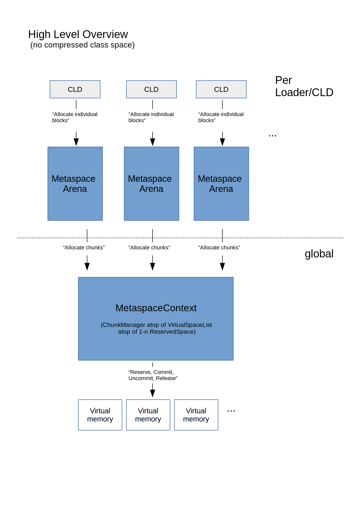
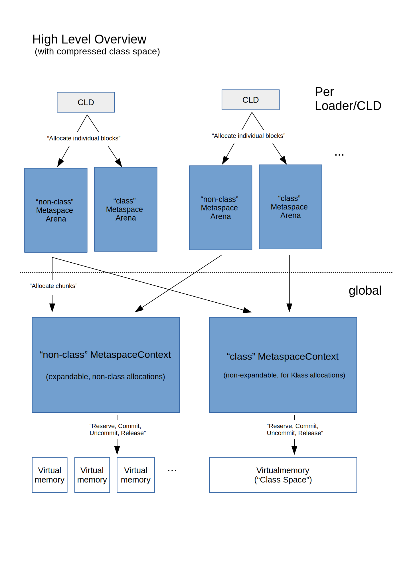
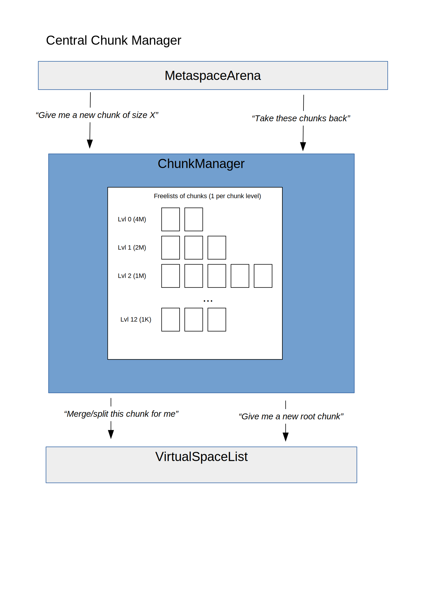
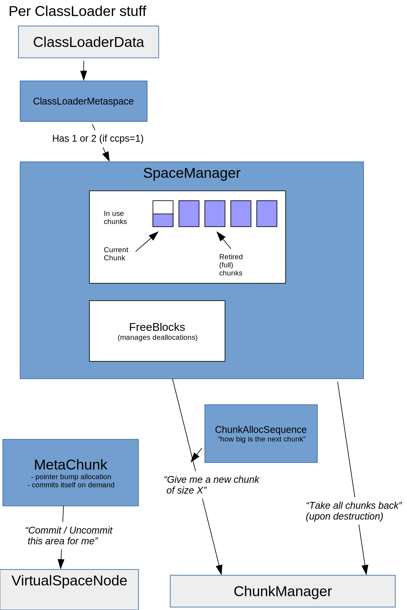
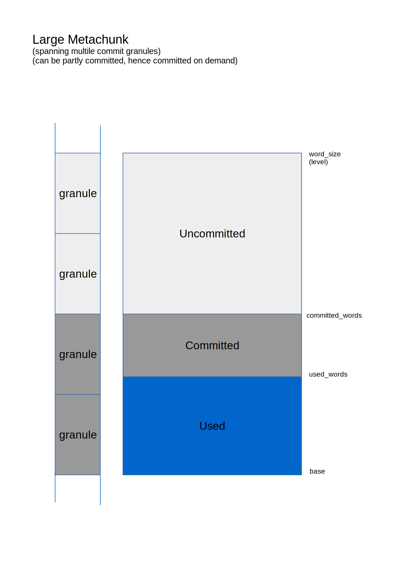
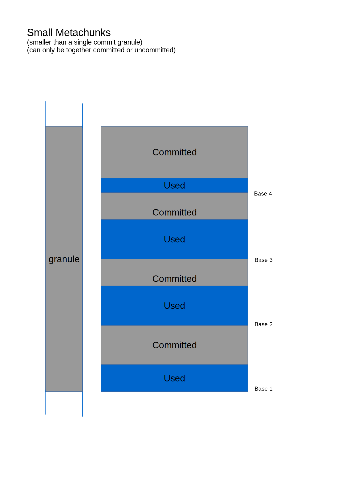
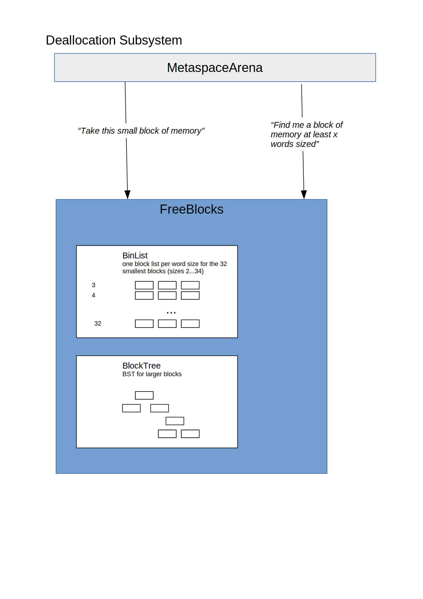

Elastic Metaspace is an ongoing rewrite of the Metaspace Subsystem. The corresponding proposal is JEP 387.
This document is both a review guide and an architectural description of the new metaspace.
The JEP explains core concepts in greater detail.
A very brief talk we gave at Fosdem 2020 about Metaspace both old and new: Slides, Recording .
A presentation we gave in March 2020: Slides .
A series of articles with a bit more depth describing the current Metaspace implementation: https://stuefe.de/posts/metaspace/what-is-metaspace .
Metaspace is used to manage memory for Metadata.
It is in its core an arena-based allocator: Metadata lifetime is typically scoped to that of the loading classloaders of their classes. Unloading a class loader will make all classes collectible, which will in turn release all their Metadata in one go. Hence we have a burst free scenario which lends itself nicely to an arena based allocation scheme.
At a very high level:
Each CLD which ever allocated Metaspace owns a MetaspaceArena. From that Arena it allocates via pointer bump (cheap). When the CLD goes away (its loader got collected), the arena gets deleted and its memory returned to the allocator.
Each MetaspaceArena references a global MetaspaceContext. A MetaspaceContext manages the underlying memory: reserving and committing memory range(s), carving it into chunks and handing out chunks. It also takes care of managing free chunks from deceiced arenas.
All this is true if compressed class pointers are disabled and we have no compressed class space:

If compressed class pointers are enabled, we have a compressed class space, and now need two global MetaspaceContext's: one holding allocations of Klass structures (the "compressed class space"), one holding everything else (the "non-class" metaspace). Each CLD also has two arenas to manages these different memory allocations:

Memory underlying the Metaspace is divided into commit granules. This is the basic unit of committing, uncommitting.
A commit granule is typically 64K in size. Its size is a compromise between virtual memory area fragmentation and the desire to uncommit free memory to return it to the system.
The smaller a commit granule is, the more likely it is to be unoccupied and eligible for uncommitting. But at the same, uncommitting very small areas will increase the number of memory mappings of the VM process.
The default size is 64K with -XX:MetaspaceReclaimStrategy=balanced. Switching to -XX:MetaspaceReclaimStrategy=aggressive switches granule size to 16K (4 pages on most platforms). The latter gives better results in scenarios with heavy usage of anonymous classes, e.g. Lambdas.
Memory in Metaspace is managed in chunks. In this granularity memory is handed to class loaders.
Chunks vary in size. Largest size is 4M ("Root Chunk"). Smallest size atm is 1K. Chunk sizes are power2 sizes.
Chunks are managed by a buddy allocator. A buddy allocator is a very simple very old algorithm which is useful to keep fragmentation at bay, at the cost of limiting the size of managed areas to power of two units. This restriction does not matter for Metaspace since the chunks are not the ultimate unit of allocation, just an intermediate.
In code, chunk size is given as "chunk level" (typedef .. chklvl_t). A root chunk - the largest chunk there is - has chunk level 0. The smallest chunk has chunk level 13. Helper functions and constants to work with chunk level can be found at chunk_level.hpp.
In buddy style allocation, a chunk is always part of a pair of chunks, unless the chunk is a root chunk. We call a chunk a "leader" if it is the first chunk (lower address) of the pair.
+-------------------+-------------------+
| Leader | Follower |
+-------------------+-------------------+
A free chunk can be merged with its buddy if that buddy is free and unsplit (which is synonymous if buddy style rules are followed):
+-------------------+-------------------+
| A | B |
+-------------------+-------------------+
|
v
+-------------------+-------------------+
| C |
+-------------------+-------------------+
If the buddy is not free, or split (in which case on of the splinters will not be free), we cannot merge. In this example, B cannot merge with its buddy since it is splintered:
+-------------------+-------------------+
| D1 | D2 | C | B |
+-------------------+-------------------+
To get a small chunk from a larger one a larger one can be split. Splitting always happens at pow2 borders:
+-------------------+-------------------+
| A |
+-------------------+-------------------+
|
v
+-------------------+-------------------+
| D1 | D2 | C | B |
+-------------------+-------------------+
The outside interface to the Metaspace (ignoring reporting/monitoring for now) are:
ClassLoaderMetaspace classclass ClassLoaderMetaspace is the holder for above mentioned arenas; it belongs to a class loader (more accurately, to a CLD). When released (in the wake of a GC collecting the owning loader and its CLD) it will release all Metaspace back to the system.
The new Metaspace is separated into various subsystems which are rather isolated and can get reviewed independently from each other.

Classes:
The Virtual Memory Layer is the lowest subsystem of all. It is responsible for reserving and committing memory. It has knowledge about commit granules (the granularity at which we commit in Metaspace). Its outside interface to upper layers is the class VirtualSpaceList; some operations are also directly accessed via a node in this list (VirtualSpaceNode).
A VirtualSpaceList is a list of reserved regions (VirtualSpaceNode). It is a global structure: only one instance of this structures exists per process. It grows on demand (new reserved regions are added when more space is needed). Regions in this list are typically several MB sized (atm 8M = 2 Root chunks areas, see below).
If we use CompressedKlassPointers, a second global instance of VirtualSpaceList exists, which holds the compressed class space. In that case the VirtualSpaceList is degenerated: it only ever has one node, sized as big as the CompressedClassSpaceSize (1G).
"Give me a new root chunk"
VirtualSpaceList::Metachunk* allocate_root_chunk();
This carves out a new root chunk (a chunk of maximum size of 4M) from the reserved space and hands it up to the caller. This operation is independent on any committed/uncommitted notion. Memory below this chunk does not have to be, and often is not, committed.
"commit this range"
VirtualSpaceNode::ensure_range_is_committed()
Memory is divided into "commit granules". This is the basic unit of committing/uncommitting. Only this subsystem knows about these.
The subsystem knows which granules are committed - it keeps the commit state of granules in a bitmask.
In contrast to old Metaspace, the committed areas do not have to be contiguous. Any granule can be committed or uncommitted independent from their neighbors.
Upper layers can request that a given address range should be committed. Subsystem figures out which commit granules are affected and makes sure those are committed. This may be fully or partly a NOOP if the range is already committed.
When committing, subsystem honors limits (either GC threshold or MaxMetaspaceSize).
"uncommit this range"
VirtualSpaceNode::uncommit_range()
Similar to committing. Subsystem figures out which commit granules are affected, and uncommits those.
"purge"
VirtualSpaceList::purge()
This unmaps all completely empty memory regions.
The Virtual Memory Subsystem takes care of a number of operations which do not necessarily have to do with virtual memory management. This is a bit historic (earlier versions of the Elastic Metaspace prototype worked differently).
These operations have to do with the Buddy Style Allocator behind the chunk management:
VirtualSpaceNode::split()VirtualSpaceNode::merge()VirtualSpaceNode::attempt_enlarge_chunk()These operations the subsystem does on behalf of the ChunkManager.
VirtualSpaceList is a list of reserved regions (VirtualSpaceNode).
It is a global structure: only one or two VirtualSpaceList instances exist per process.
VirtualSpaceList grows on demand - new reserved regions are added when more space is needed. Regions are several MB sized (atm 8M = 2 Root chunks areas, see below).
If -XX:+UseCompressedClassPointers, a second global instance of VirtualSpaceList exists, which holds the "compressed class space" (see Concepts). That instance is a degenerated version of a list; it only ever has one node which is sized as big as the CompressedClassSpaceSize (1G). New nodes cannot be added.
VirtualSpaceNode manages one contiguous reserved region of the Metaspace. In case of the compressed class space, this is the whole compressed class space.
It knows which granules in this region are committed by maintaining a bitmask (class CommitMask).
VirtualSpaceNode also knows about root chunks: the memory is divided into a series of root-chunk-sized areas (class RootChunkArea). This means the memory has to be aligned (both starting address and size) to root chunk area size of 4M.
| root chunk area | root chunk area |
+---------------------------------------------------------------+
| `VirtualSpaceNode`memory |
| |
+---------------------------------------------------------------+
|x| |x|x|x| | | | |x|x|x| | | |x|x| | | |x|x|x|x| | | | | | | | | commit granules
(x = committed)
One root chunk area can contain a root chunk or a number of smaller chunks. E.g. splitting off a 64K chunk from a 4M root chunk will split the chunk into: 2x64K, 1x128K, 1x256K, 1x512K, 1x1M, 1x2M. But note that the VirtualSpaceNode has no knowledge of this, nor does it care.
Note that the concepts of commit granules and of root chunks and the buddy allocator are almost completely orthogonal; at this layer, they exist independently from each other.
Very unexciting. Just a bit mask holding commit information, with a notion about which memory each bit covers.
RootChunkArea encapsulates the Buddy Style Allocator implementation. It is wrapped over the area of one root chunk and manages buddy operations in this area.
It knows how to split and merge chunks buddy-style-allocator-style.
RootChunkAreaLUT (for "lookup table") just holds a sequence ofRootChunkAreaclasses which cover a contiguous memory range containing multiple root chunks. It offers lookup functionality "give me the RootChunkAreafor this address".
Within the context of a VirtualSpaceNode, it just is the collection of all RootChunkAreas contained in the memory of this node.
The commit limiter exists to separate the logic of "am I allowed to commit X words more for Metaspace purposes, or would I hit GC threshold or MaxMetaspaceSize?".
It exists to remove knowledge about the GC and about limits like MaxMetaspaceSize from the Virtual Memory Subsystem. It just offers an interface to ask "is it okay to commit".
Under normal circumstances, only one instance of the CommitLimiter ever exists, see CommitLimiter::globalLimiter(), which encapsulates the GC threshold and MaxMetaspace queries.
But by separating this functionality from Metaspace, we get better testability: we can plug in a dummy CommitLimiter and thus effectively disabling or modifying the limiting; that way we can write gtests to test this subsystem without having to care about global state like how much Metaspace the underlying VM used up already.

Classes
This subsystem plays a very central role. It only consists of one class, class ChunkManager.
There only exists one central instance of the ChunkManager (two if -XX:+UseCompressedClassPointers).
ChunkManager is the central point to hand out chunks of any given level (size).
It keeps lists of free unused chunks. Memory of these chunks may or may not be committed.
It sits atop of the Virtual Memory Subsystem. If needed, it will request new root chunks from it to satisfy chunk requests and refill the free lists.
"Give me a chunk of level X"
ChunkManager::get_chunk(..)
This will provide a chunk to the upper layer of the requested size. If a fitting chunk is found in the freelists, it will reuse that one, splitting larger chunks if needed. Otherwise it will allocate a new root chunk from the Virtual Memory Subsystem and use that to satisfy the request.
"I do not need this chunk anymore, keep it"
ChunkManager::return_chunk()
Callers call this (typically a MetaspaceArena before its death) to hand down newly free chunks to the ChunkManager for safekeeping. ChunkManager will put them into the freelist. Before doing this, it will attempt to merge the chunks Buddy-Allocator style with its neighbors to arrive at larger chunks.
If, after merging with neighbors, the resulting free chunk surpasses a certain threshold, its memory is uncommitted.

Classes
The previous sub systems were all global structures. In contrast to that, this subsystem encompasses all Classes whose instances are tied to a class loader.
It builds atop the Central Chunk Manager and indirectly atop the Virtual Memory Subsystem.
It offers fine granular allocation to the caller. A caller needing 240 bytes for a constant pool will get this memory from this layer. Therefore it can be seen as the topmost layer of Metaspace.
"Give me n words of memory from class space / non class space".
ClassLoaderMetaspace::allocate()
This will allocate n words of Metaspace. Internally the memory will be taken from a chunk via pointer bump allocation, similar to a thread stack. If no chunk exists or the current chunk belonging to the class loader is too small, a new chunk is obtained by asking the ChunkManager.
"Release all Metaspace I ever allocated"
ClassLoaderMetaspace::~ClassLoaderMetaspace()
Called upon class loader death. This releases all memory ever allocated for this class loader, by returning all chunks it owns back to the underlying ClassLoaderMetaspace.
"I do not need this piece of memory, please take it"
ClassLoaderMetaspace::deallocate()
See Deallocation Subsystem for details.
Metachunk wraps one chunk - be it a root chunk of 4M or a small chunk of 1K.
It has a used portion, an unused-but-committed portion and an unused-uncommitted portion:

... unless it is smaller or equal to a commit granule, in which case it can only be wholly committed or wholly uncommitted:

MetaChunk and its payload area are disjunct. In the old Metaspace, Metachunk was a header, followed by the chunk payload. Elastic Metaspace separates those two, removing the headers from the payload and from Metaspace altogether. For details, see class ChunkPoolHeader below.
Metachunk knows its chunk memory area (base address and size aka level). It also knows the underlyingVirtualSpaceNodewhose address range the payload resides in. This is needed since it takes care of committing portions of itself on demand.
Metachunk has a state:
Metachunk always lives in a linked list - live chunks live in the in-use list of their MetaspaceArena, free chunks in the freelists of the ChunkManager, dead chunk headers live in the ChunkHeaderPool. Therefore Metachunk has a prev/next member.
In order to easily do buddy style operations to a chunk (split and merge) it is needed to easily access the neighboring chunks in memory. Therefore Metachunk has also references to its lower and upper neighbors.
A Metachunk which is "in-use" gets allocated from via pointer bump allocation, starting at base. So it has a used an unused part:
+------------------------------+--------------------------------------+
| used | unused |
+------------------------------+--------------------------------------+
^ ^ ^
base used_words end.
The memory underlying a Metachunk may consist of any number of commit granules, which can be committed or uncommitted independently from each other. So the memory below a chunk could be "checkered".
Of course, the used portion of a Metachunk has to be committed, otherwise we could not store data in them. Therefore, when allocating new memory from the Chunk, before moving the top-pointer, Metachunk ensures the newly used memory is committed by asking the underlyingVirtualSpaceNode.
But since this is costly - we do not want to botherVirtualSpaceNodefor every single allocation - Metachunk also keeps record of the highest committed address in its range. Note that does not mean there could not be committed granules in higher areas; it just means it does not know better:
+------------------------------+-------------------+------------------+
| used | unused committed | unused unknown |
+------------------------------+-------------------+------------------+
^ ^ ^ ^
base used_words committed_words end.
So, space below committed_words is guaranteed to be committed; beyond that Metachunk has to make sure by bothering VirtualSpaceNode.
A chunk can of course be smaller than a commit granule. In that case it shares that granule with its neighboring chunks. Since a commit granule can only be committed or uncommitted this means that if one of these chunks is "in-use" and needs to be committed, all chunks in this granule are committed.
Note that a chunk knows nothing about granules beyond their size, as an alignment hint for talking to VirtualSpaceNode. It just asks VirtualSpaceNode to commit a range which may or may not cover multiple granules.
Metachunk::allocate() is the central access to pointer bump allocation from a chunk. It takes care of on demand committing the underlying memory and moves the top pointer up.
MetaspaceArena manages the in-use chunk list for a class loader.
It has a current chunk, which is used to satisfy ongoing Metadata allocations. It also has a list of "retired" chunks, which are chunks which are completely or almost completely filled with Metadata. It safekeeps the chunks until the class loader dies and the MetaspaceArena is destroyed, to return them to the ChunkManager for reuse.
It also has a FreeBlocks object, which takes care about deallocated blocks - see Deallocation Subsystem below for details.
MetaspaceArena::allocate() is the central access point to allocate a piece of Metadata for a class loader.
It will first attempt to take memory from the FreeBlocks structure (see below).
Failing that, it will first attempt to take memory from the current chunk via pointer bump allocation - see Metachunk::allocate().
Failing that, it will employ various strategies to get more memory: it may try to enlarge the current chunk, or it may try to get a new chunk from the chunk manager.
When the MetaspaceArena gets an allocation request and is unable to fulfill it from the current chunk, because the space left in the current chunk is too small, it will acquire a new chunk. However, we do not want to loose the remainder space in the current chunk.
The remainder space is added to the FreeBlocks structure and managed the same way as space deallocated from the outside would - getting reused for later allocations as soon as possible.
ClassLoaderMetaspace is just the connection between a CLD and one or two instances of SpaceManger - normally just one, but if -XX:+UseCompressedClassPointers, we need two MetaspaceArenas, one for class space allocations (to put Klass* structures), one for the rest.
It also takes care of increasing the GC threshold when necessary.
Beyond that, it does not have a lot of own logic.
ArenaGrowthPolicy encapsulates the logic of "how big a chunk do I give this class loader?".
When a class loader allocates memory, we give it (via MetaspaceArena) a chunk to gnaw on, which should be fine for this requested allocation as well as a number of future allocations. The open question is how large that chunk should be. This is basically a guess toward the future loading behavior of this class loader.
If we know the class loader will only load one or very few classes (e.g. Lambdas, Reflection glue code etc), it makes sense to give the MetaspaceArena a small chunk. If we know the loader may load a lot of classes (e.g. the Boot Class loader), we may want to give it a larger chunk.
There is also the notion involved that a class loader "has to prove itself": a standard class loader which we know nothing else about will first be given a few small chunks until we give it larger chunks. How much sense this makes is questionable but as a strategy this seems to work reasonably well.
This logic existed in old Metaspace too, in a somewhat convoluted fashion, see MetaspaceArena::get_initial_chunk_size() and MetaspaceArena::calc_chunk_size().
In Elastic Metaspace, this logic lives in ArenaGrowthPolicy. This is basically just a fancy hard-coded array of chunk sizes marking the handout progression depending on how many chunks the loader already got. One of these arrays exist per use case.
Note that with Elastic Metaspace, one important difference is that we now commit larger chunks on demand. This means when handing larger chunks to a loader we do not have to pay the memory cost upfront, which reduces the penalty for given larger chunks to loaders. So, we can give e.g. a full 4MB root chunk over to the boot class loader even though it may use less (maybe a lot less with CDS involved) and it only will commit the parts it needs.

Classes:
This is a bit of a sideshow but still important.
The general assumption behind Metaspace is that we deal with arena-style allocation: we have a burst-free scenario and all Metadata go poof when their loader gets collected. However, there are cases when, after allocating Metadata, upper layers decide that memory may not needed after all.
One example is when class load errors happen and the Metadata already loaded are orphaned.
Another example is when classes are redefined and the memory holding the old bytecode is not needed anymore.
In all these cases we have to deal with premature deallocation. These are uncommon, usually rare cases (if they were not we would not use arenas). The caller returns the memory to the Metaspace via Metaspace::deallocate().
Metaspace will attempt to reuse these returned blocks. However, since the blocks are embedded into Metachunks which are in use by a live class loader, these blocks can only be reused by that class loader. Therefore, each class loader (as part of its MetaspaceArena) keeps a structure (FreeBlocks) to managed returned blocks. Normally this structure does not see much action, therefore it is only allocated on demand.
Note that this mechanism is also used to manage remainder space from almost-used-up blocks.
The interface is very simple:
"keep block for future reuse"
FreeBlocks::add_block()
Adds this block to the manager.
"give me a block of size x"
FreeBlock::get_block()
This will attempt to return a block of at least size x. The block may be larger. Internally, the best fit is searched for, and if the best fit is found but considered too large to waste for size x, it is split and the remainder is put back into the manager.
The outside interface is the FreeBlocks structure. It itself contains two structures, BinList and BlockTree.
BinList is a simple mechanism to manage small to very small memory blocks and store/retrieve them efficiently. It is somewhat costly in terms of memory (one pointer size per block word size), therefore it only covers the first 16 small block sizes. But since these block sizes are the vast majority of deallocated blocks, it makes sense to pay this cost.
BlockTree is a binary search tree used to manage larger blocks. It is unbalanced (though it may be a good idea in the future to make it a red black tree).
A collection of miscellaneous helper classes.
ChunkHeaderPool manages Metachunk structures.
Since Metachunk structures are separated from the chunk payload areas, they need to live somewhere. We could just allocate them from C-Heap but that would be suboptimal since with buddy style chunk merging and splitting a lot of temporary headers are used.
Therefore ChunkHeaderPool exists, which is just a growable array of Metachunk structures. It keeps a list of free structures. The underlying memory is allocated from C Heap.
This not only makes for more efficient allocation and deallocation of Metachunk, it also provides better locality - the chance that headers of linked chunks are allocated close to each other in this pool is high - which makes walking these chunks cheaper.
In Metaspace, a lot of things are counted. This is a lot of boilerplate coding. Helper classes exist which provide counting and various check functions (e.g.overflow- and underflow checking).
These classes live in counter.hpp:
MetachunkList is a linked list of Metachunks.
MetachunkListVector is a list of Metachunk lists. One list per chunk level. The lists only contain chunks of their level.
This is an optional feature controlled by -XX:+MetaspaceGuardAllocations. Normally off, if switched on it will add a fence after every Metaspace allocation, and test these fences in regular intervals (e.g. when a GC purges the Metaspace). This can be used to capture memory overwriters.
Locking in Elastic Metaspace is a simple a two-step mechanism which is unchanged from the old Metaspace.
There is locking at class loader level (ClassLoaderData::_metaspace_lock) which guards access to the ClassLoaderMetaspace. Ideally the brunt of Metaspace allocations should only need this lock. It guards the access to the current chunk and the pointer bump allocation done with it.
The moment central data structures are accessed (e.g. when memory needs to be committed, a new chunk allocated or returned to the freelist), a global lock is taken, the MetaspaceExpand_lock.